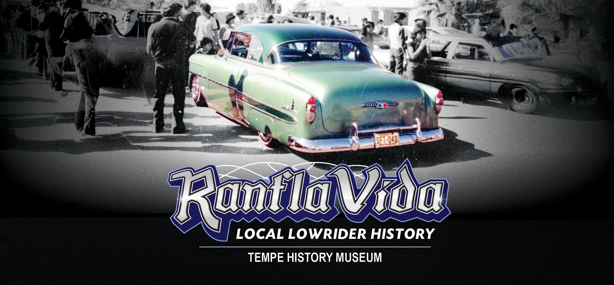
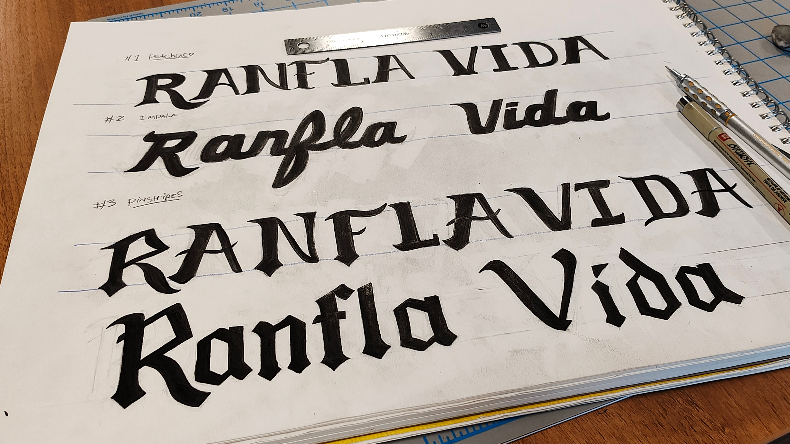
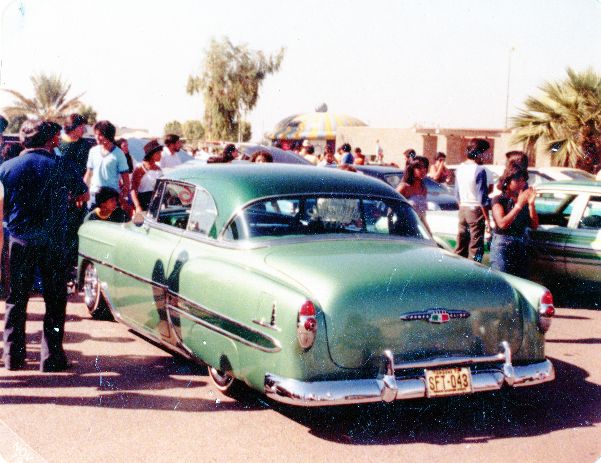
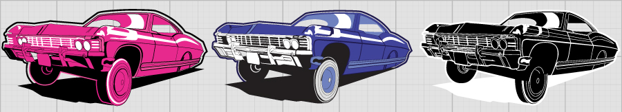
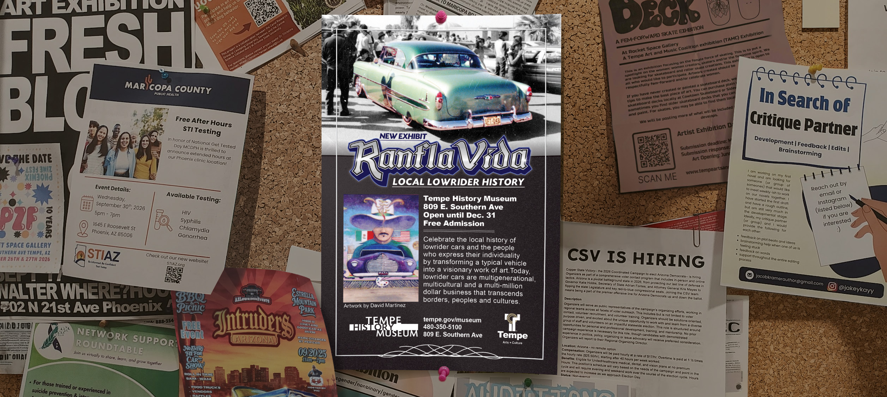
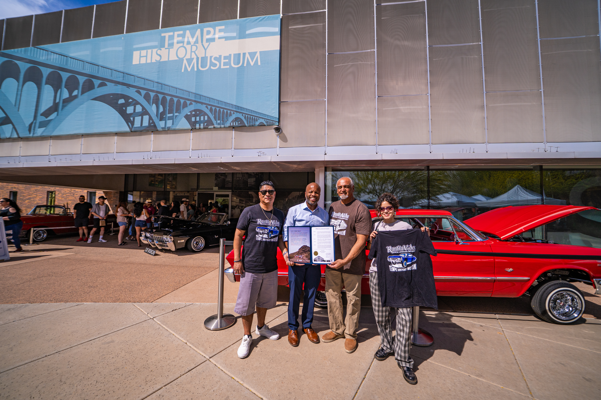
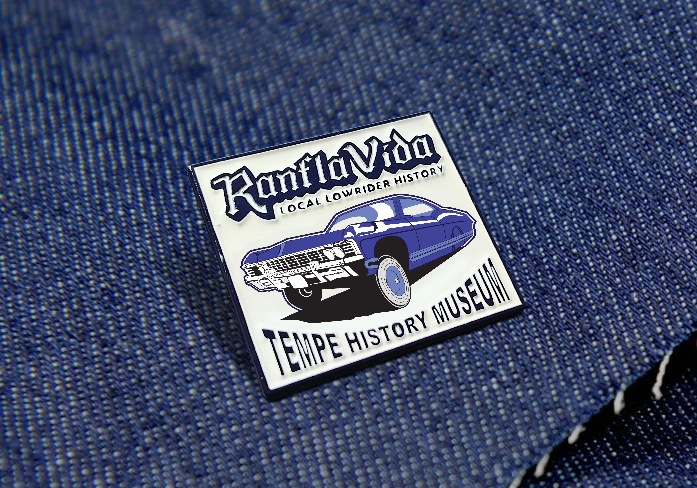
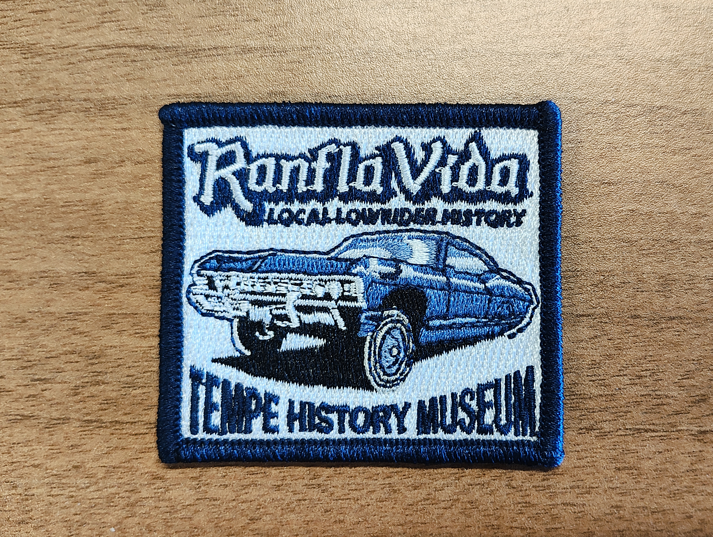
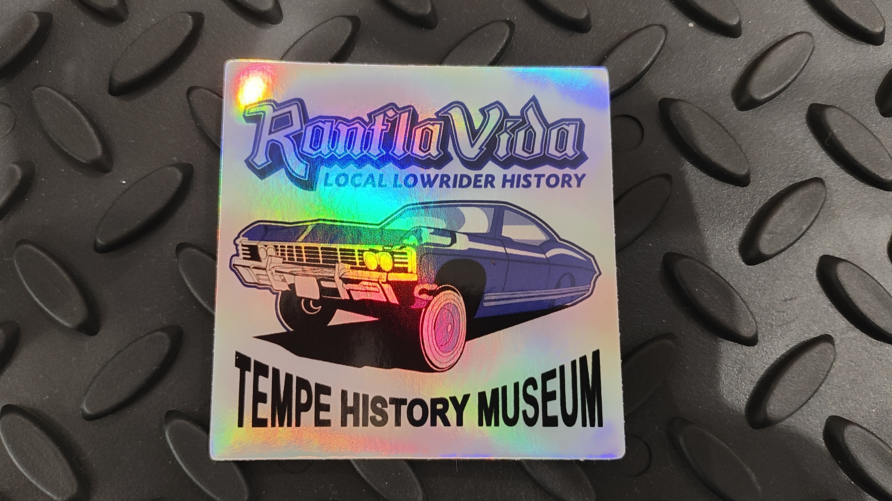
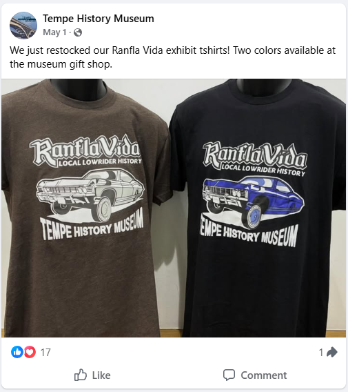

The Challenge
To create a logo and brand OG lowriders would recognize. The logo needed to balance style and readability. To create additional branding that conveyed that this was more than a car show; this was a history exhibit.


Research
I spent time studying Lowrider magazines, custom car artwork and pinstriping techniques. I watched videos demonstrating the techniques and browsed the portfolios of the greats.
My Solution
Not gonna lie, my first attempt missed the mark. The design was shared with a small group from the community for feedback, and the response was clear: it looked too much like Lowrider Magazine. That was an important lesson. In my previous project with the skate community, I learned to celebrate remixing, borrowing and putting my own spin on existing ideas. But Lowrider culture is different. These artists build their own signature styles and protect the originality behind their work. If I wanted to create something they respected, I couldn't copy, I had to own it.



2,110
Opening Attendance
$4,243
In retail sales at the store



